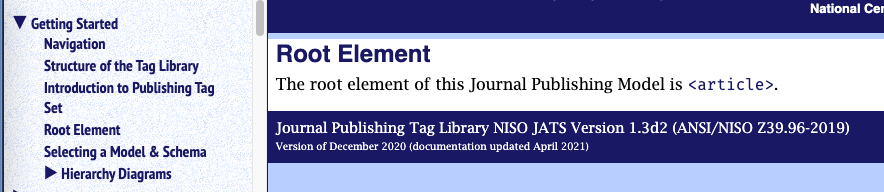

Top-level element in the Schema
The Getting Started section at the top of the NAVBAR holds a very important piece of information, not just for beginning users but for all taggers, namely, what is the root element of this schema?
Figure 4. JATS root element
|  |
Here is the similar root element section for the STS (ANSI/NISO Z39.102-2017, STS: Standards Tag Suite;) Tag Library, showing multiple root elements possible:
Figure 5. STS has two possible root elements
 |